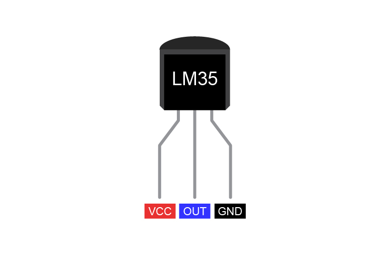
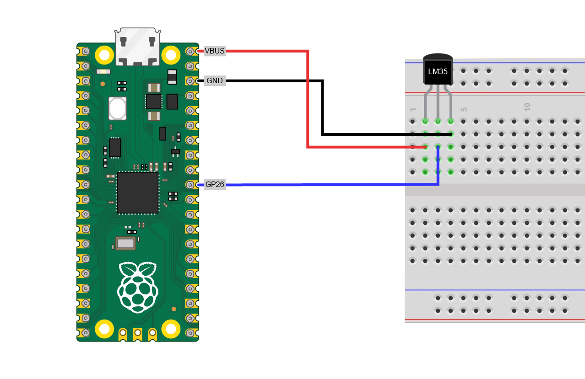
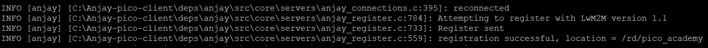
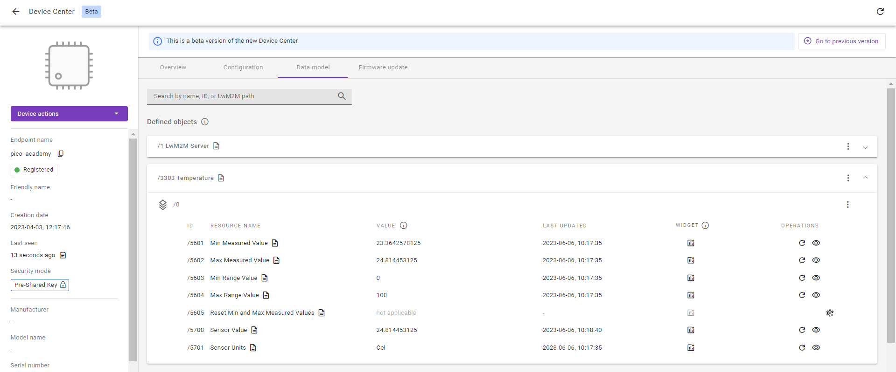

Exercise 3B: Implement the Temperature Object#
Among many Objects defined in the OMA LwM2M Object and Resource Registry, Temperature is one of the most frequently used. We will implement the Temperature Object (/3303) in this exercise using the LM35 temperature sensor. Anjay provides an easy-to-use API for implementing new sensor Objects as you will experience in this tutorial.
Note
In this exercise, we’re presenting an alternative way for implementing Objects which is different from what we used in exercise 3A. The implementation in this exercise requires more manual work, but provides an easier way to implement Objects which contain many Resources.
Prerequisites#
- A Raspberry Pi Pico W board with a USB cable
- A LM35 temperature sensor
- Installed minicom (for Linux), RealTerm, PuTTy (for Windows), or another serial communication program.
- An active Coiote IoT DM user account.
- Completed exercise 2B from module 2
Tip
Need help? Head over to the lwm2m-academy channel on Discord to get in touch with our experts.
Implement the Temperature Object#
In these steps, we are going to generate the temperature sensor files required to:
- Install the IPSO Temperature Object
/3303 - Make the Object register to the LwM2M Server at boot
- Make the device responsive to server read commands
Generate the lm35.c file#
Let’s get started by going to the Anjay-pico-client directory and creating a new directory called temperature_object_lm35.In this directory, we are creating the files:
- lm35.c and its header file lm35.h
- temperature_sensor.c and its header file temperature_sensor.h
- main.c
- CMakeLists.txt
Important
Copy and paste the main.c and CMakeLists.txt files from the Anjay-pico-client/secure_communication directory to the Anjay-pico-client/temperature_object_lm35 directory.
In the lm35.c file we need two functions:
- The
lm35_init()for the initialization of the ADC (Analog to Digital Converter) and the ADC GPIO pin. - The
temperature_get_data()for computing the temperature value from the sensor. This function will be called from the temperature_sensor.c file.
lm35.c
#include <hardware/adc.h>
#include <hardware/gpio.h>
#include <pico/stdlib.h>
#include "lm35.h"
#if (LM35_GPIO_PIN < 26) || (LM35_GPIO_PIN > 28)
# error "Invalid ADC GPIO pin selected for LM35 sensor"
#endif
int lm35_init(void) {
adc_init();
adc_gpio_init(LM35_GPIO_PIN);
return 0;
}
int temperature_get_data(double *sensor_data) {
adc_select_input(LM35_ADC_CHANNEL);
uint adc_val = adc_read(); // read ADC value (0-4095)
double milli_volts = (double) adc_val * (3300. / 4096.);
// 3.3 V which is 3300 mV
// divide by 4096 because of the size of ADC 12 bits (2^12 = 4096)
*sensor_data = milli_volts / 10.; // product requirements
return 0;
}
Generate the temperature_sensor.c file#
To generate a layout of the Object’s implementation, we need a few functions to be added to the temperature_sensor.c file: temperature_sensor_install(), temperature_sensor_update(), temperature_sensor_release() and temperature_sensor_get_value().
The most important function is responsible for getting the temperature value from the sensor. For this, we create temperature_sensor_get_value() function where we call the temperature_get_data() function (this function was created in lm35.c file).
temperature_sensor.c
static int
temperature_sensor_get_value(anjay_iid_t iid, void *_ctx, double *value) {
(void) iid;
(void) _ctx;
assert(value);
return temperature_get_data(value);
}
In the temperature_sensor_install() function, we describe the initialization of the LM35 sensor, the installation of the ipso_basic_sensor parameters using sensor-friendly Anjay API, and the creation of the Instance parameters. To install an Anjay IPSO Object we can use anjay_ipso_basic_sensor_install. For Instance parameters we need to describe the proper temperature unit which is degrees Celsius (as defined in SenML RFC), and our sensor measures temperatures which are between 0 and 100 degrees Celsius. Knowing this we can prepare an Instance and pass it to the anjay_ipso_basic_sensor_instance_add() function.
Let’s look at the temperature_sensor_install() function implementation:
temperature_sensor.c
void temperature_sensor_install(anjay_t *anjay) {
if (lm35_init()) {
avs_log(ipso_object,
WARNING,
"Driver for LM35 could not be initialized!");
return;
}
if (anjay_ipso_basic_sensor_install(anjay, 3303, NUM_INSTANCES)) {
avs_log(ipso_object,
WARNING,
"Object: Temperature sensor could not be installed");
return;
}
if (anjay_ipso_basic_sensor_instance_add(
anjay,
3303,
0,
(anjay_ipso_basic_sensor_impl_t) {
.unit = "Cel",
.min_range_value = 0,
.max_range_value = 100,
.get_value = temperature_sensor_get_value
})) {
avs_log(ipso_object,
WARNING,
"Instance of Temperature sensor object could not be added");
}
}
This function can be divided into a three sections:
-
Section 1
At the beginning we need to initialize our sensor so we can use it and get data from it. In our case, we call
lm35_init()function, which will initialize Analog-to-Digital Converter (ADC) on Pico W and ADC GPIO Pin for LM35.if (lm35_init()) { avs_log(ipso_object, WARNING, "Driver for LM35 could not be initialized!"); return; } -
Section 2
Next, we need to create an Object’s Instance with ID
/3303. Because we will use only one sensor, we create only one Instance of this Object.Note
Variable
NUM_INSTANCESis defined on top of the temperature_sensor.c file and its value shows the number of created Instances. If you want to add another instance you have to callanjay_ipso_basic_sensor_instance_addin the loop.if (anjay_ipso_basic_sensor_install(anjay, 3303, NUM_INSTANCES)) { avs_log(ipso_object, WARNING, "Object: Temperature sensor could not be installed"); return; } -
Section 3
After the sensor and Object initialization, we can add an instance of a sensor. Because it’s the first and only instance, we will define it as
/3303/0. The sensor readings will be calculated to Celsius and the sensor can read value between 0-100 Cel degrees. To acquire sensor value, Anjay will use thetemperature_sensor_get_value()function we’ve created before.if (anjay_ipso_basic_sensor_instance_add( anjay, 3303, 0, (anjay_ipso_basic_sensor_impl_t) { .unit = "Cel", .min_range_value = 0, .max_range_value = 100, .get_value = temperature_sensor_get_value })) { avs_log(ipso_object, WARNING, "Instance of Temperature sensor object could not be added"); }
Let's add the functions temperature_sensor_update(), and temperature_sensor_release(). To update the Instance we can use anjay_ipso_basic_sensor_instance_update.
temperature_sensor.c
void temperature_sensor_update(anjay_t *anjay) {
anjay_ipso_basic_sensor_update(anjay, 3303, 0);
}
void temperature_sensor_release(void) {
gpio_deinit(LM35_GPIO_PIN);
}
Add on top the necessary paths to the libraries used in the temperature_sensor.c and defined constant. In file you should include:
temperature_sensor.c
#include <assert.h>
#include <stdbool.h>
#include <anjay/anjay.h>
#include <anjay/ipso_objects.h>
#include <avsystem/commons/avs_defs.h>
#include <avsystem/commons/avs_log.h>
#include <hardware/gpio.h>
#include "lm35.h"
#include "temperature_sensor.h"
#define NUM_INSTANCES 1
Register the Object in Anjay#
The last things to do is creating the header files (temperature_sensor.h and lm35.h) for the implemented Object, registering the temperature sensor in Anjay by updating the main.c file, and updating CMakeLists.txt file.
temperature_sensor.h
#pragma once
#include <anjay/dm.h>
void temperature_sensor_install(anjay_t *anjay);
void temperature_sensor_update(anjay_t *anjay);
void temperature_sensor_release(void);
lm35.h
#pragma once
#define ADC_PIN_TO_CHANNEL(Pin) ((Pin) - (26))
/* Temperature sensor ADC channel and pin */
#define LM35_GPIO_PIN 26
#define LM35_ADC_CHANNEL ADC_PIN_TO_CHANNEL(LM35_GPIO_PIN)
int lm35_init(void);
int temperature_get_data(double *sensor_data);
main.c
void temperature_sensor_update_task(__unused void *params) {
const TickType_t delay = 2000 / portTICK_PERIOD_MS;
while (true) {
temperature_sensor_update(g_anjay);
vTaskDelay(delay);
}
}
void anjay_task(__unused void *params) {
init_wifi();
anjay_configuration_t config = {
.endpoint_name = ENDPOINT_NAME,
.in_buffer_size = 2048,
.out_buffer_size = 2048,
.msg_cache_size = 2048,
};
if (!(g_anjay = anjay_new(&config))) {
avs_log(main, ERROR, "Could not create Anjay object");
exit(1);
}
if (setup_security_object() || setup_server_object()) {
avs_log(main, ERROR, "Failed to initialize basic objects");
exit(1);
}
temperature_sensor_install(g_anjay);
xTaskCreateStatic(temperature_sensor_update_task,
"TemperatureUpdateTask", TEMP_UPDATE_TASK_SIZE, NULL,
TEMP_UPDATE_TASK_PRIORITY, temp_update_stack, &temp_update_task_buffer);
main_loop();
anjay_delete(g_anjay);
temperature_sensor_release();
}
Add on top the necessary paths to the libraries used in the main.c file you should include:
main.c
#include "temperature_sensor.h"
#ifndef RUN_FREERTOS_ON_CORE
# define RUN_FREERTOS_ON_CORE 0
#endif
#define ANJAY_TASK_PRIORITY (tskIDLE_PRIORITY + 2UL)
#define TEMP_UPDATE_TASK_PRIORITY (tskIDLE_PRIORITY + 1UL)
#define ANJAY_TASK_SIZE (4000U)
#define TEMP_UPDATE_TASK_SIZE (1000U)
static anjay_t *g_anjay;
static StackType_t anjay_stack[ANJAY_TASK_SIZE];
static StaticTask_t anjay_task_buffer;
static StackType_t temp_update_stack[TEMP_UPDATE_TASK_SIZE];
static StaticTask_t temp_update_task_buffer;
CMakeLists.txt
cmake_minimum_required(VERSION 3.13)
add_executable(temperature_object_lm35
main.c
temperature_sensor.c
lm35.c
)
target_link_libraries(temperature_object_lm35
pico_stdlib
hardware_adc
anjay-pico
FreeRTOS
)
target_include_directories(temperature_object_lm35 PRIVATE
${COMMON_DIR}/config
)
target_compile_definitions(temperature_object_lm35 PRIVATE
WIFI_SSID=\"${WIFI_SSID}\"
WIFI_PASSWORD=\"${WIFI_PASSWORD}\"
ENDPOINT_NAME=\"${ENDPOINT_NAME}\"
PSK_IDENTITY=\"${PSK_IDENTITY}\"
PSK_KEY=\"${PSK_KEY}\"
)
pico_enable_stdio_usb(temperature_object_lm35 1)
pico_enable_stdio_uart(temperature_object_lm35 0)
pico_add_extra_outputs(temperature_object_lm35)
At the end of the file add the mention about subdirectory to the general CMakeLists.txt.
Anjay-pico-client/CMakeLists.txt
add_subdirectory(temperature_object_lm35)
Save the created code and go to the next step to build the .uf2 file.
Recompile the application and flash the board#
To recompile the application, go to the Anjay-pico-client/build directory.
If you’re using Linux or Mac, run the following command:
cmake -DCMAKE_BUILD_TYPE=Debug -DWIFI_SSID="<ssid>" -DWIFI_PASSWORD="<pass>" -DENDPOINT_NAME="<endpoint_name>" -DPSK_IDENTITY="<identity>" -DPSK_KEY="<psk>" ..
If you’re using Windows, run the following command:
cmake -DCMAKE_BUILD_TYPE=Debug -DWIFI_SSID="<ssid>" -DWIFI_PASSWORD="<pass>" -DENDPOINT_NAME="<endpoint_name>" -DPSK_IDENTITY="<identity>" -DPSK_KEY="<psk>" .. -G "MinGW Makefiles"
cmake --build . -j
Connect the sensor to Raspberry Pi Pico W#
Now, let’s connect the LM35 temperature sensor to the Raspberry Pi Pico W. For this, we need 3 cables to connect the power, the ground, and the analog output of the sensor.

VCCis the power supply pin of the LM35 temperature sensor which we connect to theVBUSpin of the RPI Pico W.GNDis the ground pin of the LM35 temperature sensor and should be connected to the ground pin of the RPI Pico W.OUTis the temperature sensor analog output pin, the output voltage on this pin is directly proportional to the temperature. We connect this pin to theGPIO 26pin of the RPI Pico W.

Once the sensor is connected, it’s time to flash the .uf2 file to the Pico.
Program your board using the bootloader. Press and hold the BOOTSEL button while connecting the device through a USB cable, it should be recognized as a Mass Storage device.
Go to the Anjay-pico-client/build/temperature_object_lm35 directory, copy the temperature_object_lm35.uf2 file to the Mass Storage device directory and wait until the process finishes - copying the firmware image may take a while.
Check the logs#
With the board still connected to your PC, open a serial communication program. This will help you to check if everything is working correctly.

If all went well and logs show registration successfully updated, you can go to Coiote IoT Device Management platform where the Registration status should show Registered. In the Data model view, you should now see the Temperature Object containing all the created Resources.

Well done adding the temperature Object to the Raspberry Pi Pico W 👏
Tip
In the temperature Object you can see the Operations column. If you want to get to know what it is and how to work with this, go to the next module: Module 4 - Device Management using LwM2M.
Provide your feedback
We're constantly working on improving the LwM2M Academy. Please share with us your feedback about this module so we can create an even better learning experience.